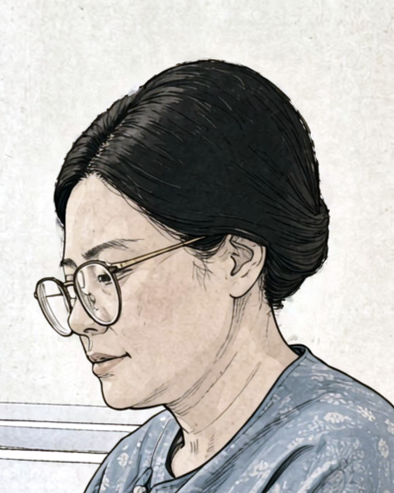
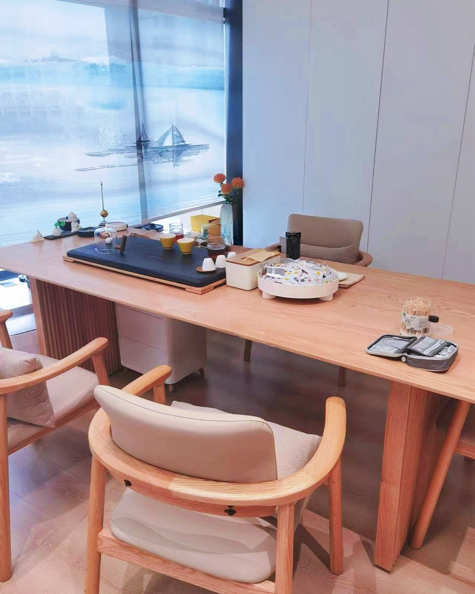

Most people who take this reading arrive with normal results and a list of things they have already tried that did not hold. Traditional Chinese Medicine asks a different set of questions, and this is one experienced practitioner answering them on your case: what she sees in your photographs, how your body has been running in the way TCM reads it, and where she thinks this has come from in the living, working and eating that shaped it. Most take it live on video, where she follows your answers as she goes; if you would rather not be on camera, she works from your photographs and intake alone. Either way you are left with it in writing. Nothing else has to follow.
Most people who take an Observation Reading never travel, and that is a complete outcome rather than a half one. You are paying for one experienced person's attention and her account of what she sees. If in-person work would help, she says so and says what it would involve. But the reading is not a screening step you have to pass, and there is no verdict at the end about whether you qualify for anything.
Most people who write to us about pain have a route behind them already: scans that were normal, or that showed something nobody wants to operate on. A course of physiotherapy. Injections that held for a while. Painkillers they would rather not keep taking. A waiting list.
Traditional Chinese Medicine has four ways of examining a person. Two of them, looking and asking, carry across distance, and this reading is built on those. It does not attempt the two that need you in the room.
Tongue, face, hands, nails and ears, shot in daylight to a short written guide we send you. Poor photographs are the single most common reason a reading has to be sent back for retakes.
Sleep, appetite, temperature, thirst, digestion, energy through the day, menstrual history where relevant, and the part most forms leave out: everything you have already tried, in the order you tried it, and what happened each time.
There is a free-text section with no character limit. People routinely tell us this is the first time anyone has asked for the whole story rather than the last six weeks of it.
The same person who writes the report is the person who looks at the photographs. Nothing is triaged by an assistant first.
The Observation Reading is arranged with an independent practitioner in China. She is not part of the Baoputang team. Baoputang Clinic, our licensed partner clinic in Ningbo, China, writes the £69 TCM Wellness Report, and that is the only service Baoputang provides. She is not a medical doctor, and what she offers is not medical care.

Drawn likeness, not a photograph
She was not trained at a university. She was taught privately, by one teacher, over years. He did not teach publicly and did not want his name used.
She has been seeing patients since 2002.
Senior TCM doctors bring her the cases they cannot place.
And where the photographs and the conversation do not give her enough, she says so. There are cases she will not decide on without seeing the person.
[ TO CONFIRM — she has not yet seen this drawing. It is derived from a working photograph, the patient in that photograph is cropped out entirely, and the page calls it a drawn likeness rather than a photograph. Her agreement to this specific image is still needed before the page goes live. ]
The same practitioner sees a small number of people face to face in China. Whether that is worth your time is something you decide with the report in front of you: how many sessions she would suggest, and what they would cost, are written down before you commit to anything. We do not quote either in advance, because it would be a guess.
If you go on to be seen in person, the £850 is credited in full against the cost of that work. If you take the reading on its own, the fee is not refundable. The reading is the thing you bought, and it has been done.
What being seen in person involves

Her own rooms · China
Nothing in the reading commits you to travelling, and we do not follow up to press the point.
We arrange the practitioner's time and an interpreter. Flights and accommodation are yours to book, in your own name.
Some readings conclude that in-person work would add little. That conclusion is written down as plainly as any other.
The fee is £850, paid in full before the reading begins. Because this is bought at a distance, you have 14 days to cancel for a full refund, unless you have asked us to begin sooner and the reading has already been delivered, in which case that right ends on delivery. We will set this out again in writing at checkout and ask you to confirm it, so nothing here is a surprise later.
You are paying for one practitioner's examination and her written account of it. No outcome is promised, by us or by her. Nothing on this site is a promise that pain, or anything else, will improve, and no result is guaranteed by taking a reading or by being seen in person afterwards. If sessions in person are indicated, the report says how many and what they would cost; it does not say what they will achieve, and neither do we.
Photographs of your face and details of your health are sensitive personal data under UK law. They are used only to produce your reading, shared only with the practitioner who writes it, and never published, used in marketing or shown as an example, including with faces obscured. You can ask us to delete everything at any time. [ TO CONFIRM — where the data is stored, how it is transferred to China, and the retention period. This needs answering before the page goes live. ]
If you take the live reading, yes. The reading itself usually takes under ten minutes by video, in Chinese with an interpreter present throughout, and you can stay on longer to ask about anything she has said. If you take the written reading, no, and the fee is the same either way. Meeting her in person is a separate thing, and it is the in-person work described above.
The TCM Wellness Report is written by a senior physician at a licensed clinic, working to a structured format. It is the sensible first step and it answers most people's question. The Observation Reading is with one independent practitioner, and you can take it live with her or in writing. It works from observation and goes into where things have come from and what she would do about it. They are separate services from separate people. Starting with the £69 report and stopping there is a perfectly good outcome. The £69 report
The written account is supplied in English. The original Chinese is not included.
We would rather lose the enquiry than take £850 from someone this cannot help. If any of the following applies, we will say so and we will not take the booking.
Write to us with the short version and what you have already tried. We will tell you honestly whether this is the right thing for you, including when it isn't, and including when the £69 report would serve you just as well.
Enquire about a reading